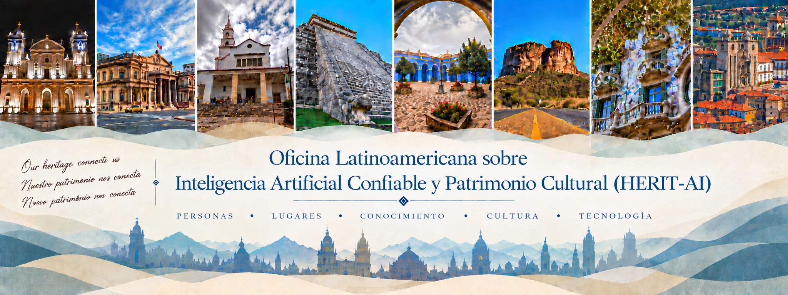

“A vida não é a que a gente viveu, e sim a que a gente recorda e como recorda para contá-la.”
SOBRE A OFICINA
O patrimônio cultural envolve a história, as tradições, a identidade e as memórias coletivas das comunidades. Por meio de suas manifestações tanto tangíveis quanto intangíveis, preserva o legado cultural das sociedades e favorece a transmissão de conhecimentos, valores e práticas ao longo das gerações. Nesse sentido, desempenha um papel fundamental no fortalecimento da identidade cultural, no apoio à educação e na promoção da consciência social e histórica. Acima de tudo, o patrimônio cultural trata de preservar a memória humana e impedir que as histórias, os conhecimentos e os valores que definem as sociedades desapareçam, mantendo-os acessíveis às gerações presentes e futuras.
Os recentes avanços na Inteligência Artificial (IA) estão criando novas oportunidades para documentar, preservar, analisar, interpretar, gerir e divulgar o patrimônio cultural. No entanto, o uso da IA no patrimônio cultural também apresenta riscos e desafios importantes. Os sistemas de IA podem refletir e reforçar preconceitos, estereótipos culturais ou desigualdades presentes nos dados utilizados para treiná-los. Diante desses desafios, o HERIT-AI tem como objetivo reunir pesquisadores de IA e profissionais de museus, arquivos, bibliotecas, arqueologia, conservação, humanidades digitais e outras instituições dedicadas ao patrimônio cultural, a fim de promover a colaboração interdisciplinar e o intercâmbio de conhecimentos. Além de apresentar artigos de pesquisa originais, o workshop oferecerá um espaço para discutir experiências do mundo real, estudos de caso, projetos-piloto e iniciativas em andamento relacionadas à adoção da IA no patrimônio cultural.
A visão do HERIT-AI é construir uma comunidade ibero-americana na qual a Inteligência Artificial e o Patrimônio Cultural evoluam conjuntamente. Ao promover o diálogo, a cocriação e a colaboração interdisciplinar, o workshop busca não apenas impulsionar as aplicações da IA ao patrimônio cultural, mas também inspirar o desenvolvimento de uma Inteligência Artificial mais centrada no ser humano, confiável e socialmente significativa, por meio de uma das áreas mais valiosas da humanidade.
CHAMADA PARA ARTIGOS
Tipos de Contribuições
- Artigos de pesquisa completos (até 15 páginas, incluindo as referências). Contribuições de pesquisa originais que apresentem métodos, abordagens, sistemas ou resultados empíricos inovadores na interseção entre a Inteligência Artificial Confiável e o Patrimônio Cultural.
- Artigos de pesquisa curtos (até 10 páginas, incluindo as referências). Contribuições que apresentem um problema de pesquisa claramente definido e uma contribuição científica emergente ou em desenvolvimento, incluindo métodos, resultados ou descobertas preliminares.
- Ideias inovadoras (até 10 páginas, incluindo as referências). Ideias inovadoras, novas linhas de pesquisa, abordagens conceituais e visões de futuro sobre a Inteligência Artificial Confiável e o Patrimônio Cultural.
- Resumos ampliados (até 4 páginas, incluindo as referências). Ideias em estágio inicial, projetos preliminares, protótipos, conjuntos de dados, demonstrações, estudos de caso ou iniciativas emergentes. As contribuições aceitas serão apresentadas como pôsteres físicos.
Tópicos de Interesse
- Digitalização inteligente, documentação e preservação de longo prazo de bens do patrimônio cultural.
- Técnicas de visão computacional para a análise de obras de arte, reconhecimento de objetos, recuperação de imagens, avaliação de danos e reconstrução virtual.
- Processamento de linguagem natural e LLMs para documentos históricos, arquivos, coleções multilíngues e extração de conhecimento cultural.
- Representação do conhecimento, grafos de conhecimento, tecnologias semânticas e raciocínio para a modelagem e a integração de informações sobre o patrimônio cultural.
- Inteligência Artificial explicável, confiável e responsável para apoiar a tomada de decisões em museus, arquivos, bibliotecas e instituições dedicadas ao patrimônio.
- Conservação, restauração, monitoramento e avaliação de riscos do patrimônio cultural assistidos por Inteligência Artificial.
- Inteligência Artificial generativa e narrativas digitais para a educação, a interpretação e a participação do público.
- Experiências culturais interativas apoiadas por Inteligência Artificial, personalização, acessibilidade e participação cultural inclusiva.
- Desafios éticos, jurídicos, organizacionais e sociais associados à adoção da Inteligência Artificial no patrimônio cultural.
- Implementações em contextos reais, estudos de caso, colaborações interdisciplinares e metodologias de avaliação de sistemas de Inteligência Artificial aplicados ao patrimônio cultural.
- Desinformação, informações falsas e narrativas inexatas, tendenciosas ou enganosas em representações do patrimônio cultural geradas ou assistidas por Inteligência Artificial.
- Princípios FAIR: Princípios FAIR (Encontrável, Acessível, Interoperável e Reutilizável) para conjuntos de dados complexos, garantindo o acesso de longo prazo a dados históricos e sociais.
- Arquivos prontos para IA: Estruturação de arquivos históricos e dados culturais para que as ferramentas modernas de Inteligência Artificial possam processá-los de forma eficaz.
Instruções para a submissão
Os artigos devem ser escritos em inglês, espanhol ou português e preparados utilizando o formato oficial Springer LNCS. Para artigos escritos em espanhol ou português, o resumo também deve ser apresentado em inglês. Todas as contribuições devem ser submetidas eletronicamente por meio do EasyChair através do seguinte link para submissão. Todas as contribuições serão submetidas a um processo de revisão por pares single-blind.
Anais
- Os artigos aceitos serão incluídos nos anais da oficina.
- Espera-se que pelo menos um dos autores de cada artigo aceito se inscreva na oficina e participe do evento para apresentar o artigo.
- Nosso objetivo é selecionar versões ampliadas e revisadas dos artigos aceitos para publicação em uma edição especial de uma revista internacional, desde que seja reunido um número suficiente de artigos de alta qualidade. Essas contribuições passarão por um segundo processo formal de seleção para atender aos padrões de qualidade da revista.
DATAS IMPORTANTES
- Prazo para submissão: 18 de outubro de 2026
- Notificação de aceitação: 3 de novembro de 2026
- Oficina: 17 de novembro de 2026
PALESTRA PRINCIPAL
Palestrante convidado
A anunciar.
COMITÊ ORGANIZADOR
-
Juan Carlos Nieves
(Universidade de Umeå) -
Mariela Morveli Espinoza
(Universidade de Umeå) -
Ulises Cortés
(Universitat Politècnica de Catalunya)
PROGRAMA
Programa da Oficina
O programa será publicado após o processo de revisão.
Junte-se à comunidade HERIT-AI
Para dúvidas e oportunidades de colaboração, entre em contato com os organizadores da oficina.
Entre em contato →